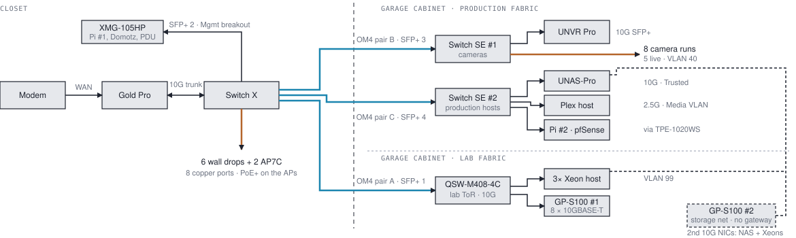
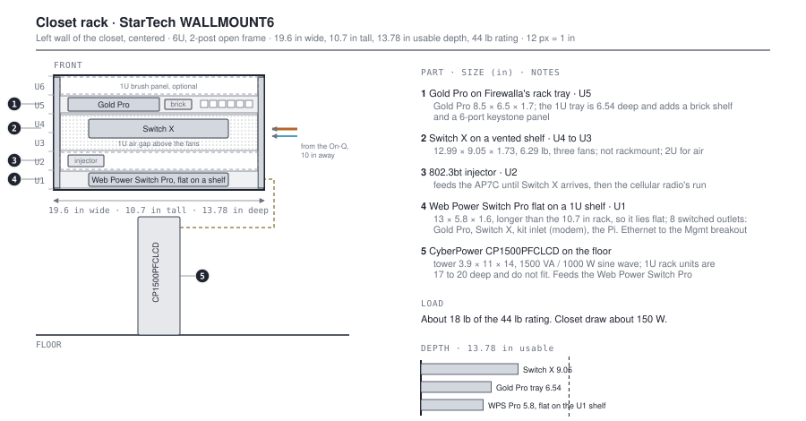
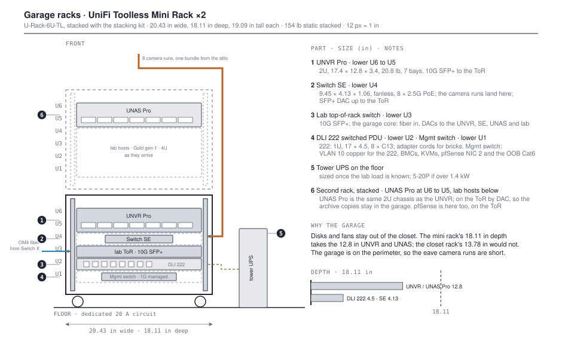
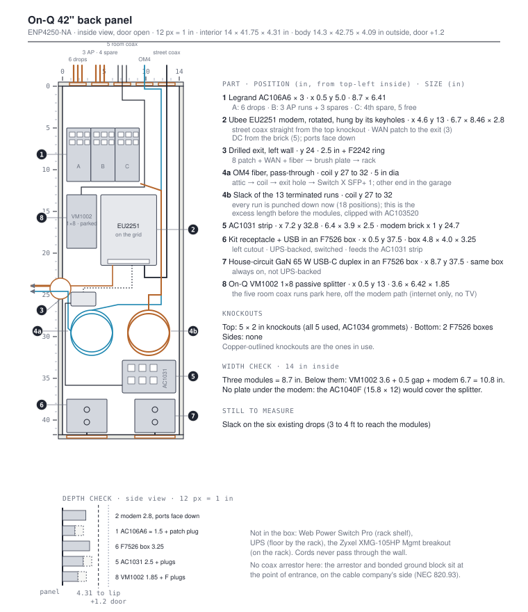

Pinnacle Network Plan
Eight VLANs behind one Firewalla Gold Pro, Wi-Fi that can tag them, cameras that record at home, a garage cabinet holding a production fabric and a separate lab fabric on their own fiber, and a 5G second WAN. Single-story, 1,860 sq ft, Carlsbad.
1Today
docs/01 · read from the Firewalla MSP dashboard and the Orbi admin UI
Every device sits in one broadcast domain, 192.168.187.0/24, labelled LAN 1: laptops, cameras, the NAS, 28 smart plugs, two Teslas and the lab. The 282 firewall rules and 3,839 alarms all operate inside that one flat space. Two VPN networks exist beside it: WireGuard on 10.189.243.x and AmneziaWG on 10.190.96.x.
| Class | Count | Notable members |
|---|---|---|
| TP-Link Kasa | 28 | EP25 ×10, HS300 ×7, KP115 ×4, HS103 ×4; KP200 in-wall outlets are being added through the house |
| Apple clients and TVs | ~16 | Mac Studio, 2× Apple TV, laptops, phones, Watch |
| Sonos | 8 | 8 units across 5 zones (two stereo pairs) plus 2 subs |
| Google / Nest | 7 | Nest-Cam, doorbell, displays, speakers. The cameras go; the doorbell stays |
| Orbi Wi-Fi 7 | 3 | RBE971 + 2× RBE970 in AP mode, wired backhaul. Being replaced |
| Lab and infrastructure | 7 | UNAS-Pro, pfSense on a Silicom box (2 NICs), Raspberry Pi, Domotz |
| Energy / EV | 6 | Enphase envoy, Sense, Rainforest eagle, 2× Tesla + Wall Connector |
| Media / gaming | 5 | LG C2 77", Shield, PS5, Xbox, FamilyHub |
| Other IoT | ~36 | Bond, Flume, MyQ, Rinnai, WiZ, eufy robot vacuum, Neakasa ×2, printers, ESLs |
The Orbi 970 cannot tag VLANs in AP mode; the VLAN menus do not exist there. Its guest network NATs behind the Orbi's own LAN address, so guest traffic is invisible to the Firewalla and guests keep application-layer reach into the LAN. Every wireless device stays in one L2 domain until the Orbi is retired.
In 24 hours Nest-Cam pushed 11.4 GB up and a second Nest device 6.8 GB; the two cameras are about 60% of the 30 GB daily upload, and googleapis.com as a whole takes two-thirds. Against a 35 Mb/s ceiling that is a permanent tax on every other outbound flow. Local recording with UniFi Protect removes it, which is the strongest single argument for the camera swap.
2Target architecture
docs/13 · the build-to sheet

Three principles. The Gold Pro stays the single edge: it routes 10 Gbps with IDS/IPS on, so it is not the bottleneck and every VLAN, including the lab, is routed by it. The garage holds two fabrics that share a cabinet and nothing else: production (cameras, NAS, Plex, a Pi-hole, pfSense) on Firewalla-managed switches, and the lab on its own third-party switch, so tearing the lab down cannot take production with it. Lab east-west traffic never crosses a Firewalla.
Gold Pro ports
| Port | Speed | Role |
|---|---|---|
| 1 | 10G | LAN trunk to Switch X, all VLANs tagged. The only role that needs 10G |
| 2 | 2.5G | Second AP during Phase 2; spare afterwards |
| 3 | 2.5G | WAN1, the Ubee EU2251 modem |
| 4 | 10G | WAN2, the Puli AX cellular router, from Phase 3 |
Switch X, closet core
| Port | Connects | VLAN handling | PoE |
|---|---|---|---|
| Cu 1 to 5 | Bedroom 1, bedroom 2, master, family room, living room drops | Access, Trusted. The family-room drop becomes a trunk if the AP7 Desktop lives there | none |
| Cu 6 | Existing garage Cat6 to Switch SE #2 | Access, Mgmt: the out-of-band path to the garage | none |
| Cu 7, 8 | Ceiling runs to the AP7 Ceiling units (Cu 8 reserved for the conditional third AP) | Trunk, untagged native Mgmt LAN | PoE+ 25.5 W |
| SFP+ 1 | OM4 pair A to the lab top-of-rack switch | Trunk: 99 + Mgmt | none |
| SFP+ 2 | DAC to the owned Zyxel XMG-105HP, the closet Mgmt breakout: Pi-hole #1 on PoE, Domotz, the closet PDU | Access, Mgmt | none |
| SFP+ 3 | OM4 pair B to Switch SE #1 (cameras) | Trunk: 40 + Mgmt | none |
| SFP+ 4 | OM4 pair C to Switch SE #2 (production hosts) | Trunk: 20, 50, 80 + Mgmt | none |
Garage production fabric: two Switch SEs
| Switch | Port | Connects | VLAN handling |
|---|---|---|---|
| SE #1 | SFP+ 1 | OM4 pair B from Switch X | Trunk: Cameras + Mgmt |
| SE #1 | SFP+ 2 | UNVR Pro, 10G | Access, Cameras |
| SE #1 | Cu 1 to 8 | The eight camera runs (five live) | Access, Cameras; 64 W of 114 W at eight cameras |
| SE #2 | SFP+ 1 | OM4 pair C from Switch X | Trunk: Trusted, Media, DMZ + Mgmt |
| SE #2 | SFP+ 2 | DXP8800 Plus, 10G through a 10GBASE-T module | Access, Trusted |
| SE #2 | Cu 1 to 8 | The TPE-1020WS uplink, the Plex host, pfSense NIC 1 and NIC 2, the DXP4800 Plus (2.5G), the UNAS-Pro (1G), small servers | Access: Mgmt, Media, DMZ, Mgmt, Trusted, Trusted, Trusted |
| TPE-1020WS | GbE 1 to 8, PoE+ | Owned TRENDnet console switch under SE #2: Pi-hole #2 on PoE, BMCs, PoE JetKVMs, the OOB Cat6 from Switch X Cu 6 | Flat, Mgmt |
Both SEs are Firewalla-managed, so VLANs and VqLAN hold end to end and no third-party switch sits between the Gold Pro and the cameras. The TPE-1020WS carries Mgmt only, so its 75 W of PoE+ powers the Pi and the consoles without spending SE #2's 2.5G ports.
Garage lab fabric: owned QNAP and GiGaPlus switches
| Switch | Port | Connects | VLAN handling |
|---|---|---|---|
| QSW-M408-4C | combo 1, SFP+ | OM4 pair A from Switch X | Access, Lab (VLAN 99 untagged) |
| QSW-M408-4C | combo 2, RJ45 | 10GBASE-T down to GP-2100-0800T #1 | Lab |
| QSW-M408-4C | combo 3, 4; GbE 1 to 8 | QNAP TS-932PX lab NAS at 10G; the Chenbro NR12001 by SFP+ DAC; the 6028U's 1GbE until it has a 10G NIC; the Gold gen-1 | Lab |
| GP-2100-0800T #1 | 10GBASE-T 1 to 8 | Supermicro SC216 (onboard X540), the 6028U-TR4+ once it has a 10GBASE-T NIC | Flat, Lab |
| GP-2100-0800T #2 | 10GBASE-T 1 to 8 | Storage network: the DXP8800's second 10GbE, the DXP4800's 10GbE, the SC216's second X540 port, 10GBASE-T NICs in the 6028U and the Chenbro | Isolated; no uplink, no gateway |
The lab switches carry only the lab. The consoles plug into the TPE-1020WS on Mgmt, not the lab switches, so a lab switch fault cannot take them with it. The storage switch has no uplink at all: it is a second network card in each host, not a path through the firewall, and it carries NFS and iSCSI only. The SEs are not lab switches (2.5G access ports) and do not power the APs: two AP7 Ceilings plus eight cameras is 115 W against one SE's 114 W budget.
3VLANs and policy
docs/02
Trusted keeps 192.168.187.0/24, so laptops, phones, static assignments and port forwards stay where they are. Everything else moves out around them, which turns one flag-day cutover into several small ones. Mgmt is configured as a Firewalla LAN, untagged on the AP and switch ports, because the AP7 is managed only over a LAN, not a tagged VLAN.
| VLAN | Purpose | Subnet | Occupants |
|---|---|---|---|
| 10 · Mgmt | Infrastructure only | 10.187.10.0/24 | Firewalla boxes, Switch X and both SEs, the Zyxel XMG-105HP and TPE-1020WS, AP7s, the three PDUs, Domotz, pfSense NIC 2, the three lab servers’ IPMI ports, both Pi-holes |
| 20 · Trusted | People and work | 192.168.187.0/24 | Macs, phones, tablets, printers; in the garage the DXP8800 Plus (production NAS), the DXP4800 Plus (backup), the UNAS-Pro (Protect archive), small servers. Unchanged |
| 30 · IoT | Cloud-dependent things | 10.187.30.0/23 | All Kasa including KP200s, WiZ, Bond, MyQ, Flume, Rinnai, appliances, Nest doorbell, thermostat and displays, eufy, Neakasa, ESLs, Enphase, Sense, Rainforest, the Teslas and the Wall Connector |
| 40 · Cameras | Surveillance; WAN only for UniFi cloud and NTP | 10.187.40.0/24 | UniFi PoE cameras and the UNVR Pro |
| 50 · Media | Streaming and audio | 10.187.50.0/24 | Sonos ×8, LG C2, Shield, PS5, Xbox, Apple TVs, the Plex host |
| 60 · Guest | Internet only | 10.187.60.0/24 | Visitors and contractors. 100/10 Mb/s cap, device isolation (section 8) |
| 80 · DMZ | Internet-facing only | 10.187.80.0/24 | pfSense with HAProxy, in the garage cabinet on Switch SE #2 (section 10) |
| 99 · Lab | Rack, routed by the Gold Pro at 10G | 10.99.0.0/16 | Supermicro SC216 and 6028U-TR4+, Chenbro NR12001, and the QNAP TS-932PX and TS-563 lab NAS behind the lab top-of-rack switch (section 12) |
IoT gets a /23 because 28 Kasa devices today plus the KP200 rollout and 36 other IoT devices make a /24 tight, and a /23 costs nothing now.
Inter-VLAN policy
| From ↓ / To → | Mgmt | Trusted | IoT | Cameras | Media | Guest | DMZ | Lab | WAN |
|---|---|---|---|---|---|---|---|---|---|
| Mgmt | — | ✓ | ✓ | ✓ | ✓ | ◐ | ✓ | ✓ | ✓ |
| Trusted | ◐ | — | ◐ | ◐ | ◐ | ✕ | ◐ | ✓ | ✓ |
| IoT | ✕ | ✕ | — | ✕ | ✕ | ✕ | ✕ | ✕ | ✓ |
| Cameras | ✕ | ◐ | ✕ | — | ✕ | ✕ | ✕ | ✕ | ◐ |
| Media | ✕ | ◐ | ✕ | ✕ | — | ✕ | ✕ | ✕ | ✓ |
| Guest | ✕ | ✕ | ✕ | ✕ | ✕ | — | ◐ | ✕ | ✓ |
| DMZ | ✕ | ✕ | ✕ | ✕ | ◐ | ✕ | — | ◐ | ◐ |
| Lab | ✕ | ✕ | ✕ | ✕ | ✕ | ✕ | ✕ | — | ✓ |
✓ allowed · ✕ denied · ◐ conditional: established sessions plus specific service ports.
- Cameras reach the WAN only for UniFi cloud and NTP. Cameras to Trusted is one allow: the UNVR to the UNAS-Pro over SMB for the archive copies.
- Trusted to IoT is initiated-only, so cloud-controlled Kasa works and a plug cannot reach a Mac. HomeKit accessories on IoT also need mDNS reflection Trusted↔IoT.
- The Plex host lives in Media so the TVs and Sonos find it natively. Media to Trusted is one allow, the Plex host to the DXP8800 Plus for the library (or the library rides the storage network); DMZ to Media is one allow, the proxy to the Plex host on TCP 32400, for remote access.
- Mgmt to Guest is conditional because the Guest network carries a bidirectional block of all local networks. Guest to DMZ is one conditional allow, the proxy on TCP 443, only if Custom DNS Rules turn out to apply to Guest.
- VPN reach differs per tunnel: WireGuard gets the Trusted row minus the Mgmt column; AmneziaWG gets the Mgmt row, so it is the remote-admin tunnel.
- VqLAN is ACL-based and is bypassed by any generic switch. In the closet that only matters until Switch X arrives; the garage production fabric is all Firewalla switches, and the lab's own switches carry only the lab.
- One segment sits outside this table on purpose: the garage storage network, an isolated 10G switch between the UGREEN NAS units' spare 10G ports and second NICs in the lab hosts, no gateway, no uplink, NFS and iSCSI only.
4Wi-Fi
docs/04
Two Firewalla AP7s across 1,860 sq ft, about 930 sq ft each, with a ceiling run pulled for a conditional third. Even two radios in this footprint need deliberate tuning; the defaults leave every band at maximum power.
| Band | Width | Plan |
|---|---|---|
| 6 GHz | 320 MHz | One channel per AP. US 6 GHz has three non-overlapping 320 MHz channels in Low Power Indoor mode, so two or three APs fit with no co-channel overlap. The AP7 Desktop is 4×4 on 6 GHz (11.5 Gbps); the Ceiling units are 2×2 (5.76 Gbps), so the central Desktop is the strongest radio in the house |
| 5 GHz | 40 MHz | Not 80. The AP7 exposes UNII-3 (149 to 165), which the Orbi hid, so the non-DFS set gives four clean 40 MHz blocks: 36+40, 44+48, 149+153, 157+161. No DFS, no co-channel |
| 2.4 GHz | 20 MHz | Bands are chosen per SSID, not per AP, so set 2.4 GHz transmit power to minimum on one AP and low on the rest. Kasa devices are 2.4-only and cling to their first association; coverage should be deliberate and minimal |
SSIDs
| SSID | VLAN | Bands and security |
|---|---|---|
| pinnacle | 20 Trusted | 2.4 + 5 + 6 GHz, Mixed Personal (WPA2 on 2.4/5 GHz, WPA3 on 6 GHz). Not the AP7's "WPA2/WPA3" mode, which leaves 6 GHz off. Same SSID and passphrase as today |
| pinnacle-IoT | 30 IoT | 2.4 GHz only, WPA2. Same SSID and passphrase as today, so the 28 Kasa devices re-join on their own |
| pinnacle-Media | 50 Media | 5 GHz, for anything not hardwired |
| pinnacle-Guest | 60 Guest | 2.4 + 5 GHz, WPA2/WPA3, device isolation, 100/10 Mb/s cap (section 8) |
Placement and uplinks
Firewalla's ceiling-mount guide allows the ceiling or a wall at 6 to 10 ft. A vault peak at 14 to 18 ft is outside either and puts a weak, splayed pattern where clients are not, so mount on the vault wall at 8 to 10 ft or on a flat ceiling section. The Ceiling units go where the two Orbi satellites are now, since those spots already have drops; the Desktop takes the RBE971's central spot and needs an outlet and a data drop there.
Each AP port is a trunk carrying the Wi-Fi VLANs with an untagged native Mgmt LAN for control traffic, and Wi-Fi networks can only use VLANs present on the same port set as that LAN. Until Switch X arrives the APs patch straight into the Gold Pro, because the unmanaged switch cannot carry the trunk.
5Closet and garage
docs/05 · docs/closet-elevation.md · click a drawing to open it full size
All house wiring home-runs to a 42 in Legrand On-Q enclosure (ENP4250-NA, interior 14 × 41.75 × 4.31 in) in the back wall of a 36 × 23 in closet. A StarTech WALLMOUNT6 rack (6U, 19.6 × 10.7 in, 13.78 in usable depth) is centered on the left wall. The attached garage, under 100 ft away, gets a UniFi 42U cabinet holding two fabrics. The rule: nothing with a disk, and nothing with cameras behind it, lives in the closet.



| Decision | What | Why |
|---|---|---|
| No new closet rack, no patch panel | Gold Pro and Switch X in the existing StarTech; runs terminate on the AC106A6 modules | The closet is 36 × 23 in; a 12U rack never fit the room |
| Power into the On-Q only through a kit | Legrand in-wall outlet relocation kit: inlet in a box beside the rack, receptacle in an F7526 box at the left bottom cutout | A flexible cord may not pass through a wall (NEC 400.12). The kit's inlet plugs into a switched outlet on the Web Power Switch Pro, so the modem is UPS-backed and remotely power-cycled |
| Second bottom cutout on house power | F7526 box with an Amerisense 65 W GaN USB-C duplex | Always on, not UPS-backed; for anything that only needs USB power |
| Pass-through | Drilled 2.5 in hole with the F2242 ring in the On-Q's left wall, a 2-gang brush plate in the stud bay before the corner, then about 10 in in the open under a D-Line cord cover into the rack's side | The plastic 42 has no side knockouts, and the rack is on the adjacent wall about 1.7 in from the corner. Measure the stud bay first; the On-Q body is 14.3 in on 16 in stud centers |
| Modem hangs on the grid | By its own keyhole slots, ports down, backed by AC103520 clips | The AC1040F plate is 15.8 × 12 × 0.89 in: it would cover the splitter and cost 0.89 in of depth. It stays spare |
| Cameras to the garage | Eight runs gather in the attic and drop as one bundle into the garage wall, onto Switch SE #1 | The garage is on the perimeter, and nothing powered goes in the attic: the SE is rated 32 to 104 °F, the Puli 0 to 40 °C |
| One cabinet, two fabrics | UniFi 42U Rack, 1,000 mm ($1,199, ships assembled, 204 lb, door to door). Production block at the top, lab block below, each on its own fiber pair and its own PDU | The Supermicro SC216 is 24.8 in deep and the 6028U-TR4+ 28.46 in; the cabinet's rails adjust 25.7 to 34.5 in. Separate PDUs so a lab fault cannot trip the cameras |
| Five NAS units, one of record | UGREEN DXP8800 Plus (8 bays, i5, 2 × 10GbE) is the production NAS: Plex library, house shares, backup source. DXP4800 Plus is its backup target. UNAS-Pro holds only the Protect archive. QNAP TS-932PX and TS-563 are lab NAS on VLAN 99 | The DXP4800 and both QNAPs still hold Plex data; the library consolidates onto the 8800 first, then each takes its role or is decommissioned. The storage network uses the UGREENs' spare 10G ports |
| Owned switches put to work | Zyxel XMG-105HP as the closet Mgmt breakout (PoE for Pi #1); TRENDnet TPE-1020WS as the garage console switch (PoE for Pi #2 and the KVMs); QNAP QSW-M408-4C as the lab top-of-rack; two GiGaPlus 8 × 10GBASE-T units as the lab copper switch and the storage network. Spares: a GigaPlus GP-S100-0800S-M (8 × 10G SFP+, managed), two TRENDnet TEG-3102WS, a TEG-S762, a D-Link and a QNAP 5-port 2.5G | Takes the lab switch and the breakout module off the buy list. The Switch SEs stay because the cameras need PoE on a Firewalla-managed switch and the production hosts share that fabric |
| PDUs | DLI Web Power Switch Pro (8 × NEMA) in the closet; DLI 222 (8 × C13) for the garage production block; a second 222 or metered strip for the lab | NEMA outlets where the bricks are, rack ears where there is a rack. The DLI units have REST, Lua and AutoPing |
| UPS | CyberPower CP1500PFCLCD tower on the closet floor, NUT over USB from Pi-hole #1; a rack UPS at the base of the cabinet, NUT from Pi-hole #2, sized once the servers' draw is known | The closet rack is too shallow for a rack UPS; the cabinet is not |
Cable pull
Attic access reaches a false ceiling throughout. Cable is the one thing that cannot be redone cheaply once the gear is live, so this is the one place where over-building is the frugal choice.
| Run | Qty | Spec | Purpose |
|---|---|---|---|
| Ceiling AP positions | 3 | Cat6A | Two AP7 Ceiling mounts and one spare position |
| Exterior cameras | 8 | Cat6 | Eave runs to the garage. Cameras need 1G at most |
| Interior spares | 4 | Cat6A | Office, patio, a future AP; one becomes the cellular radio's run. All four terminate on the On-Q modules, unpatched until used |
| Garage fiber | 1 | OM4, 12 strand | Beside the existing Cat6, not instead of it. Pair A to the lab switch, pair B to Switch SE #1, pair C to Switch SE #2, three pairs spare. Fiber rather than copper because the cabinet is on its own circuits; a copper run between separately grounded points is a ground-loop and surge path |
Closet port demand: six drops plus two AP runs is seven of Switch X's eight copper ports, with Cu 8 reserved for the third AP. The closet conduit carries 6 Cat6, 7 Cat6A and the fiber, about 16 to 25% of a 2 in conduit's 40% fill allowance; pulling tension and bend count become the limits long before fill does. The existing six drops end at wall plates near the floor, so the ceiling APs need new runs regardless of the camera project.
About 46 cu ft behind a closed door, with Switch X's three fans and roughly 150 W inside. Plan on a louvered door or leaving it ajar, and check temperatures the first week. Stand in there with the door shut before Switch X arrives.
6What to buy, and when
docs/11 · prices checked 28 and 29 Aug 2026; re-check at checkout, several items are pre-sale
Five groups, each with a trigger. Nothing in a later group is worth ordering before its trigger fires. The full line-item lists, with the owned parts, are in docs/11.
| Group | Trigger | What | Once |
|---|---|---|---|
| 1. This week | Ships now; needed for the cable weekend and the Wi-Fi cutover | AP7 Ceiling and Desktop ($369 each), Linovision 10G 802.3bt injector, Cat6 and Cat6A boxes, OM4 fiber, two 1U shelves and a brush panel, DLI Web Power Switch Pro ($229), CyberPower CP1500PFCLCD ($275), brush plate, TII 212 coax arrestor with bonding wire, old-work box, patch cables, right-angle modem leads, coax jumper, hole saw, labels | ~$2,150 |
| 2. Pre-order | Holds a place in the queue | Switch X ($649.20 pre-sale, Sept/Oct), two Switch SEs ($299.30 each, Oct/Nov, early access sold out), six 10GBASE-SR optics, a DAC for the Mgmt breakout, a 10GBASE-T module for the DXP8800 on SE #2 | ~$1,420 |
| 3. After a test | Signal survey; two-week coverage test | 802.3bt splitter to 12 V ($90), DC pigtail, 4×4 antenna if the survey needs it. A third AP7 Ceiling with injector ($395) only if the coverage test shows a gap | ~$180 (+$395) |
| 4. Cameras and cabinet | Switch SEs in hand, about November | UniFi 42U cabinet ($1,199), UNVR Pro ($499), 5 to 7 surveillance drives, 5 cameras sized for 8, DLI 222 (~$249), a DAC, two shelves for the SEs, a 5U shelf for the two UGREENs, a brush panel and a basic power strip | ~$4,100 to $4,500 |
| 5. Lab | Server specs in hand; rack power-on | Three used 10GBASE-T NICs (two for the 6028U, one for the Chenbro), a DAC, spare optics, lab PDU, rack UPS (sized after a measured draw), a shelf for the QNAPs, a second DLI 222 and a strip. All three servers have IPMI and the owned Tripp Lite LCD console racks at U15, so no JetKVMs are needed to build. The switches are owned | ~$560 |
| Program | Plus the rack UPS and the conditional AP. Excludes the three lab servers (owned), UNAS drives and electrician work. The Calyx SIM is $500/yr and already paid | ~$8,400 to $8,800 |
Already owned and in the plan: Gold Pro, Gold gen-1, the pfSense box, the five NAS units above, the three lab servers (Supermicro CSE-216 with X10DRH-iT, Supermicro SYS-6028U-TR4+ with X10DRU-i+, Chenbro NR12001), the Plex host (form factor pending), two Raspberry Pis, the switches listed in section 5, the StarTech rack, the Gold Pro rack tray, the On-Q parts (three AC106A6 modules, relocation kit, two F7526 boxes, AC1031 strip, grommets, clips, D-Line cover, VM1002 splitter, Amerisense outlets), the GL.iNet Puli AX, the Calyx membership, Domotz, and the Spectrum modem.
PoE budgets
The camera figure is an assumption until a model is chosen. Switch X has enough reserve to absorb the whole camera fleet if the layout ever consolidates.
Storage for continuous recording
UniFi 4K cameras at H.265 write 8 to 12 Mbps around the clock, 86 to 130 GB per day each, so eight cameras is roughly 690 to 1,040 GB a day. Sizing assumes about 105 GB per camera per day: 60 to 90 days of retention needs about 50 to 75 TB, which is 5 to 7 surveillance drives at about $200 each. Two drives would last 21 to 34 days. The UNAS-Pro is the archive target for Protect, not the recorder; it cannot run Protect itself.
7Phases
docs/11 · checklists; docs/09 carries the reasoning
Cable before hardware, because it is the only step that gets harder later. Wi-Fi before switches, because injectors decouple them. Trusted before IoT. Cameras after Wi-Fi is stable, with the cabinet and the production fabric. The lab fabric last, because nothing else depends on it.
- Place the group 1 and group 2 orders.
- Define all eight VLANs on the Gold Pro (mobile app; MSP Lite gates the web Networks page).
- Inventory static IPs, DHCP reservations and port forwards.
- Calyx SIM into the Puli; walk the house on battery and record n41 and n71 signal at the candidate window and exterior-wall spots.
- Check the Spectrum account for the high-split upload upgrade.
- Measure the slack on the six existing drops (3 to 4 ft needed to reach the modules). Fit the three AC106A6 modules; remove the original 8-position module.
- Drill the On-Q's left side and fit the F2242 ring; brush plate before the corner; F7526 boxes in both bottom cutouts; kit inlet box beside the rack; AC1034 grommets in the top knockouts.
- Pull 3× Cat6A to the ceiling AP positions, 8× Cat6 to the eave camera positions (gathered in the attic, dropped as one bundle into the garage), 4× Cat6A interior spares, and the OM4 fiber beside the existing garage Cat6.
- Coax: arrestor, jumper, modem, nothing else in that path; park the five room coax runs on the VM1002, labeled.
- Punch down: six drops on module A; three AP runs and three spares on module B; the fourth spare on module C. RJ45 the camera runs in the garage. Mount the modem by its keyholes, the VM1002 beside the modules, the AC1031 strip.
- Fix the Orbi's secondary DNS (
8.8.8.8to192.168.187.1) while on site.
- AP7 Ceiling on its run through the Linovision injector; AP7 Desktop central. Both patched straight to Gold Pro LAN ports as trunks with an untagged native Mgmt LAN.
- SSIDs per section 4; turn transmit power down from the default; apply the band plan.
- Audit rules that target "Local Networks"; their meaning changes under the AP7.
- Migrate Trusted clients, then IoT (Kasa re-joins on the same SSID and passphrase). Test Sonos and AirPlay across VLANs with the mDNS reflector and SSDP Relay on and IGMP/MLD snooping off.
- Guest network per section 8. Two-week coverage test; order the third AP only if it shows a gap. Retire the Orbi; keep it boxed for 30 days.
- Rack per section 5. Eight patch cables from the On-Q modules; 10G trunk to the Gold Pro with all VLANs tagged; SFP+ 2 by DAC to the Zyxel XMG-105HP as the Mgmt breakout for Pi-hole #1 (PoE), Domotz and the PDU; the old unmanaged switch retires.
- Move the AP7 Ceiling from the injector to Switch X PoE+. Migrate wired hosts: Mac Studio, Pi-hole #1, Domotz.
- Firewalla upstream DNS to Pi-hole #1 (Pi-hole #2 joins in Phase 4),
revServers; block outbound :53 except the resolvers; enable DoH blocking. - Cellular WAN2 per section 9 on the freed Gold Pro port, Failover with Auto Failback.
- IPv6: test each block from a v6 client; where a rule does not hold in v6, turn IPv6 off on that LAN. VPN policy: WireGuard is Trusted minus Mgmt; AmneziaWG is full reach.
- Cabinet in (plan the path from the driveway; 204 lb, ships assembled). Production block at the top: both SEs on the U41 shelf, UNVR Pro, UNAS-Pro, Plex host, Pi-hole #2 and pfSense, DLI 222, the TPE-1020WS under it as the console switch.
- Light fiber pairs B and C: Switch X SFP+ 3 to SE #1, SFP+ 4 to SE #2; the garage Cat6 from Cu 6 to SE #2 as the OOB path.
- Cameras on SE #1, VLAN 40, WAN blocked except UniFi cloud and NTP; UNVR on SE #1 at 10G with one allow to the UNAS-Pro for the archive copies. DXP8800 Plus on SE #2 at 10G, the DXP4800 Plus and UNAS-Pro on its copper; Plex host in Media with its allow to the 8800; Pi-hole #2 on the TPE-1020WS as the second Firewalla upstream and the NUT server for the rack UPS; nebula-sync between the Pis.
- Consolidate the Plex library onto the DXP8800 Plus from the DXP4800, TS-932PX and TS-563, then wipe and repurpose them or decommission.
- Decommission the Nest cameras last and confirm the WAN upload drop. The doorbell stays, on VLAN 30.
- Measure the servers' draw with the CPUs and drives fitted; confirm the Chenbro's board, depth and PSU wattage. Then the circuits, the rack UPS and the lab PDU.
- Lab fabric at the bottom of the cabinet: the QSW-M408-4C on fiber pair A, GP-2100 #1 under it on a combo RJ45 port, the SC216 and 6028U on 10GBASE-T, the Chenbro on an SFP+ DAC, the Gold gen-1 as a nested lab firewall. Lab on VLAN 99, routed by the Gold Pro at 10G.
- Storage network: GP-2100 #2 with no uplink; the UGREENs' spare 10GbE ports, the SC216's second onboard port and 10GBASE-T NICs in the 6028U and the Chenbro; one non-routed subnet, no gateway; NFS and iSCSI only. TS-932PX on the ToR at 10G, TS-563 on the lab copper switch.
- Consoles: all three servers' IPMI ports on the TPE-1020WS (Mgmt).
- pfSense single-armed in the DMZ: move the GUI to the Mgmt NIC on 8443 first, then HAProxy and ACME. Firewalla: 443 forward from Cloudflare ranges only; per-backend DMZ to Lab allows; Custom DNS Rules for internal resolution.
8Guest network
docs/14 · lands in Phase 2 with the AP7s; there is no guest network before that
| Item | Decision |
|---|---|
| Reach | Internet only. No printer, no casting, no local devices |
| Bandwidth | 100 Mb/s down, 10 Mb/s up, Smart Queue priority Low, shared by the whole segment |
| VLAN and SSID | 60, 10.187.60.0/24; pinnacle-Guest on 2.4 + 5 GHz, WPA2/WPA3 |
| Isolation | Guests cannot see each other |
| IPv6 | Off on the Guest LAN. Firewalla documents no v4/v6 selector on rules, so this closes the v6 side |
| Sharing | QR code from the Firewalla app. Rotate the passphrase after a contractor engagement and regenerate the QR |
Build order in the Firewalla app: create the VLAN on the same ports as the untagged LAN the AP7 is managed on; block traffic to and from all local networks, bidirectional; create the SSID on the Guest VLAN; create a Guest device group with VqLAN and Device Isolation on and set it as the SSID's group, so new guests land in it automatically; add the Smart Queue rule applied to the Guest network; turn IPv6 off on the LAN. Pi-hole blocklists apply to guests through the Firewalla; the port-53 block and the DoH block are scoped per network, so add Guest to both.
If Custom DNS Rules turn out to apply to Guest, guests will resolve the public websites to the DMZ proxy and the local-networks block will drop the connection. The fix, consistent with internet-only, is one allow to the proxy on TCP 443 plus the proxy as an Allowed Device on the Guest group, because the VqLAN group blocks all local segments regardless of rules. Test whether the rule alone suffices first.
Acceptance test before Phase 2 is done: a phone on pinnacle-Guest gets a 10.187.60.x address, browses, has a known-blocked domain fail, cannot reach the Mac Studio, the printer or a Sonos, cannot ping a second guest, and speed-tests at roughly 100/10.
9Cellular failover
docs/15
A GL.iNet Puli AX (5G, Quectel RM520N-GL, four SMA antenna ports, owned) on a Calyx Institute Sprout SIM (unlimited T-Mobile, $500/yr, active) becomes the Gold Pro's second WAN. It is powered over one of the four spare Cat6A runs so the radio sits at a window or exterior wall where the signal is, not where the rack is, and never in the attic (the Puli is rated to 40 °C).
Spectrum modem (On-Q) ───────────────────────────► Gold Pro WAN1
┌── data ──► Puli AX
Gold Pro WAN2 ──► 802.3bt injector ── one Cat6A spare ────┤ (window / exterior wall)
│ (rack, WPS Pro outlet) splitter
UPS power └── 12 V barrel ──►- WAN2 never touches a switch. Firewalla switches sit downstream of a LAN port and have no WAN role; patched into Switch X, the Puli would become a second DHCP server on the LAN.
- The Linovision 802.3bt injector (Type 4, 90 W) powers the AP7 Ceiling until Switch X arrives, then moves here. The splitter is a Type 3 device, so the link runs at 51 W at the splitter and about 45 W after conversion to 12 V, against the Puli's 30 W nameplate. 48 V travels the run; 12 V is made at the radio. Nothing labelled passive PoE at either end.
- The splitter is a PoE Texas GBT-12V60W (12 V / 4.5 A, indoor, $90) or an L-com POESOD1GBT (IP67 outdoor). Both end in terminal blocks, so a 5.5 × 2.1 mm pigtail is needed, and both pass gigabit data, so WAN2 links at 1G.
- WAN2 gets
192.168.8.xfrom the Puli, double NAT, which is fine for failover and collides with nothing else in the plan.
On the Gold Pro: create the WAN on port 4, mode Failover with Spectrum primary and Auto Failback on (never load balancing; banks and Wi-Fi calling break when flows split across two source addresses). Connectivity tests against external addresses, not Spectrum's gateway, because most Spectrum outages are link-up-no-transit. Policy routes pinned to WAN1 with drop-when-down for the UNVR cloud and backups, the UNAS off-site backup, the Nest cameras until replaced, the Mac Studio backup, and game and OS updates, so an outage stops them instead of spending the cellular allowance. Set the WAN speeds so Smart Queue knows which pipe it is on.
During failover, IPv4 remote access fails: T-Mobile is CGNAT, so WireGuard and AmneziaWG cannot reach the house, DDNS points at the cellular address, and the Firewalla app still works through Firewalla's cloud. T-Mobile is IPv6-native and the Puli offers native and passthrough IPv6 modes, so WAN2 may carry a global v6 prefix; untested, and if it works, WireGuard over v6 survives failover. Do not chase the Puli's bridge mode: it is experimental, SSH-only, disables Wi-Fi, and is pointless behind CGNAT.
10Publishing websites
docs/07
Several websites on separate domains, hosted on different internal machines, DNS in Cloudflare, reachable from the internet through one public IP. NAT works at layer 3/4 and cannot see a hostname; the domain appears only in the TLS handshake (SNI) and the HTTP Host header, so splitting many domains across one address needs something that inspects or terminates at layer 7. Every domain's A record points at the single public IP.
pfSense sits today at 192.168.187.99 on the flat LAN, in the same broadcast domain as the Macs, the UNAS-Pro, the cameras and 28 cloud-connected plugs. A reverse proxy is the one host built to be reached from the internet. It moves to the DMZ and the garage rack.
| Approach | Inbound | Assessment |
|---|---|---|
| Cloudflare Tunnel cloudflared in the DMZ | None | The daemon makes an outbound connection; no port opens and the origin IP is never exposed. Free, and Cloudflare already holds the DNS. Routing is configured at Cloudflare rather than locally |
| Reverse proxy + port forward Caddy, nginx or Traefik in the DMZ | 443 only | Local control of routing. Restrict the Firewalla forward to Cloudflare's published IP ranges. Caddy gets automatic certificates with the least configuration |
| pfSense + HAProxy single-armed on the Silicom box | 443 only | Chosen. HAProxy does SNI and Host-header routing well, the ACME package handles certificates, and single-armed pfSense (a host on the DMZ, not a gateway) avoids a second NAT layer |
| Element | Configuration |
|---|---|
| NIC 1, data | DMZ, static 10.187.80.10, on Switch SE #2 copper. HAProxy listens here. Default gateway is the Firewalla's DMZ interface |
| NIC 2, management | Mgmt, on Switch SE #2 copper. The pfSense GUI binds only here; Firewalla rules block anything DMZ-sourced toward it |
| Packages | HAProxy and ACME (Let's Encrypt, DNS-01 through the Cloudflare API, which needs no inbound connectivity and is the only way to get wildcard certificates) |
| Routing | None. No NAT, no gateway role. It is a host |
| Firewalla WAN rule | Forward 443 to 10.187.80.10, sourced from Cloudflare IP ranges only |
| Firewalla DMZ rules | One allow per backend into the lab, specific host and port. DMZ to Trusted is denied without exception. DMZ egress limited to package updates and ACME |
pfSense's GUI binds 443 by default. Move it first: System → Advanced → Admin Access → TCP Port, set 8443, and untick the WebGUI redirect so port 80 is free too. Netgate's docs say this "will free up the standard web ports for use with port forwards or other services such as HAProxy," and warn against exposing the GUI to untrusted networks even on non-default ports, which is why it lives on the Mgmt NIC.
Configuration, checked against the upstream manuals
TLS termination with Host-header routing is the shape for ordinary websites. To also pass a host through untouched (an appliance with its own certificate), the passthrough frontend owns *:443 and hands everything else to a local terminating frontend; two frontends cannot both bind *:443. In a TCP frontend only the HTTP/2 preface can be parsed, and in a TLS passthrough the Host header is encrypted anyway, so route on req.ssl_sni, never on hdr(host). SNI is a routing hint, not access control: Encrypted Client Hello presents a decoy SNI. On pfSense the HAProxy package writes the config from its GUI; these snippets show intent.
frontend tls_passthrough
bind *:443
mode tcp
tcp-request inspect-delay 5s
tcp-request content accept if { req.ssl_hello_type 1 }
use_backend bk_appliance if { req.ssl_sni -i appliance.example.com }
default_backend bk_terminate
backend bk_terminate
mode tcp
server local 127.0.0.1:8443
frontend https_in
bind 127.0.0.1:8443 ssl crt /var/etc/haproxy/certs/
mode http
acl host_one hdr(host) -i site-one.example.com
use_backend bk_one if host_one
default_backend bk_nomatch
backend bk_one
mode http
server s1 10.99.10.20:8080 checkIf pfSense ever feels like more machinery than the job needs, the same hardware runs Debian plus Caddy. The stock Caddy binary has no DNS providers; wildcard certificates through Cloudflare need a build with github.com/caddy-dns/cloudflare, and without it the Caddyfile fails to load with module not registered: dns.providers.cloudflare. From Caddy 2.10 a *.example.com block's wildcard certificate is shared with sibling subdomain blocks.
site-one.example.com {
reverse_proxy 10.99.10.20:8080
}
*.example.com {
tls {
dns cloudflare {env.CLOUDFLARE_API_TOKEN}
}
reverse_proxy 10.99.10.44:80
}Internal clients resolving the public domains get the public IP from Cloudflare and would hairpin through the WAN. Firewalla's Custom DNS Rules (Services → Custom DNS Rules) map a domain straight to the internal address for LAN clients; A and AAAA only, and a top-level entry captures its subdomains. Whether a rule applies per network or to every network, guest included, is not documented; test it on a scratch domain once the VLANs exist.
11DNS and Pi-hole
docs/08
Two Raspberry Pis run Pi-hole v6. Firewalla and Pi-hole both want to own DNS, and per Firewalla's own documentation you cannot fully have both. Clients that point straight at Pi-hole bypass Firewalla's DNS layer; in Firewalla's words the traffic "doesn't go through layer 3 (IP layer) of Firewalla. Therefore, DNS interception on Firewalla doesn't take effect and DNS-based features doesn't work." The plan keeps Firewalla as the resolver for every client and forwards upstream to the Pi-holes: 282 rules and a per-network policy set are worth more than per-client graphs in Pi-hole, and Firewalla already has per-device DNS visibility tied to its inventory.
| Item | Plan |
|---|---|
| Placement | Both Pis on Mgmt with static addresses, in different rooms: Pi #1 in the closet on the Mgmt breakout (PoE from the XMG-105HP), Pi #2 in the garage on the TPE-1020WS (PoE) under Switch SE #2, so DNS survives either room losing power; both configured as Firewalla upstreams. Not in the lab: DNS must not depend on the environment built to be torn down, and not on the Firewalla itself |
| What stacks | Family Protect and Adblock stack on top of Pi-hole. Firewalla's DoH and Unbound do not: a device with DoH enabled uses the DoH server regardless of its DNS setting, so both stay off |
| DNS Booster | Stays on. Firewalla: "If you turn DNS Booster off, many DNS blocks will NOT work." Pi-hole nominally sees one client, the Firewalla; whether Firewalla emits EDNS Client Subnet upstream is untested |
| Hostnames in reports | revServers (formerly conditional forwarding) pointed at the Firewalla, which is the DHCP authority, so reports show names instead of addresses |
| Keeping two in sync | nebula-sync, built for the v6 API: Teleporter or selective sync, Docker, cron, webhooks. Give it an application password and enable webserver.api.app_sudo on the replica or the sync fails. Gravity Sync is archived and does not support v6 |
| Other jobs of the Pis | Pi #1 is the NUT server for the closet UPS; Pi #2 is the NUT server for the rack UPS, and the UNVR, UNAS, Plex host and lab hosts get one allow each to it on TCP 3493. Uptime Kuma runs on one of them and needs to reach what it polls |
Two leaks to close once the VLANs exist. Hardcoded resolvers: the Orbi already resolves through 8.8.8.8, and IoT devices do the same, so a Firewalla rule blocks outbound port 53 to anything except the resolvers, scoped per network. DNS over HTTPS: a client using DoH bypasses both Pi-hole and Firewalla on port 443, so Firewalla's DoH blocking goes on.
12Lab and the spare Gold
docs/12 · docs/05
The lab is three servers, a Supermicro CSE-216 with an X10DRH-iT (dual socket, one E5-2683 v4 16-core so far, 26 × 2.5 in bays, 2 × 10GBASE-T onboard), a Supermicro SYS-6028U-TR4+ (dual socket, one E5-2697A v4 16-core so far, 12 × 3.5 in bays, 4 × 1GbE) and a Chenbro NR12001 (1U, 12 × 3.5 in + 1 × 2.5 in bays, single PSU, one GbE, IPMI, an SFP+ card), on their own 10G top-of-rack switch at the bottom of the garage cabinet, on VLAN 99, routed directly by the Gold Pro at 10G with IDS/IPS on: lab to NAS at 10G, lab to internet at the full 1000/35, one policy plane. Nothing production hangs off the lab switch. The spare is an original Firewalla Gold with four 1 GbE ports. Inline as the lab edge it would be a 1 Gbps chokepoint on a 10G fiber, so it becomes a nested firewall inside the lab, a real device to build test topologies against, or a cold spare for the Gold Pro (1 Gbps during a failover matches the Spectrum downstream anyway).
Consoles
All three lab servers have IPMI 2.0 with KVM-over-LAN on a dedicated port, which lands on the TPE-1020WS in Mgmt, and the owned Tripp Lite B021-000-17 1U LCD console at U15 is the crash cart for the case neither a BMC nor a network console can help. A JetKVM is optional: it replaces the viewer, not the BMC, and the case for one is that Supermicro X10 HTML5 virtual media often wants an SFT-DCMS-SINGLE license with the Java viewer as the free fallback. Buy one before buying three: USB plus HDMI, no ATX board, because the DLI 222 does the hard power cycles, one outlet per server, with the BIOS set to power on after AC loss, on the lab PDU. Power the JetKVM from a 5 V adapter on an unswitched outlet or the PoE model, not from the host, or the console dies with the host during the cycle you are watching. Past eight hosts, a PiKVM V4 Plus with its switch.
Also in the plan
- NUT on Pi #1 for the closet UPS and on Pi #2 for the rack UPS, for graceful shutdown.
- Scheduled Firewalla config exports and a 3-2-1 backup layout: DXP8800 Plus as the copy of record, DXP4800 Plus as the second copy over the storage network, one copy off-site; a whole-home surge protector at the panel with an electrician (~$250).
- Home Assistant on dedicated hardware, not in the lab, with one allow into IoT; Kasa plugs added by IP, and newer models need TP-Link cloud credentials once for local control.
- PPSK per-device keys on the IoT SSID; central syslog and Uptime Kuma; an internal DNS zone. The retired HDHomeRun could return on a Cat6A position in Media; its discovery is a UDP 65001 broadcast, so clients outside Media need its address by hand.
13Orbi, until it goes
docs/06 · read from the RBE971 admin UI at 192.168.187.230
Three units on firmware 9.13.2.1. Netgear released 12.1.10.12 on 13 Jul 2026 and the Orbi's update check reports "Update failed" and "Service unreachable," so it is a release behind and cannot fetch the next one; the likely cause is Firewalla blocking Netgear's update endpoints. AP mode, DHCP off, both satellites on wired backhaul, guest network off, a separate pinnacle-IoT SSID already in place. 63 clients associated at the time of the audit.
| Finding | State | Handling |
|---|---|---|
| 2.4 GHz channel | Moved from 2 to 11 | Done. Channel 2 overlapped both 1 and 6 |
| 5 GHz | 160 MHz across 36 to 64, including DFS; UNII-3 absent | Unfixable. The upper 5 GHz band is reserved for wireless backhaul even when backhaul is wired, and the firmware offers no width control. A radar event drops every client on the band |
| Transmit power | No control in the UI | Unfixable. Three APs over-cover 1,860 sq ft; only the AP7 migration solves it |
| 240 MHz MLO backhaul | Enabled | Leave it. Narrowing it does not reclaim the reserved 5 GHz band and degrades the wireless fallback path, which was observed in use |
| Secondary DNS | 8.8.8.8 | Change to 192.168.187.1 on site. The setting shares a page with the Router/AP mode toggle, so not remotely |
| Admin plane | HTTP Basic Auth over plain HTTP; the Wi-Fi passphrase shows in cleartext | Disappears when management moves to VLAN 10 behind an AP platform the Firewalla manages. Do not script against it from an untrusted segment |
What carries to the AP7 build: the SSID names and passphrases, the two satellite positions as the Ceiling mounts, the RBE971's spot for the Desktop, region United States. One caution from the audit: a Netgear Nighthawk 5G router on the client side intercepts admin traffic bound for other Netgear devices, which once made the Orbi look down when it was healthy. It stays off the network.
14Risks
docs/10
| Risk | Why | Mitigation |
|---|---|---|
| Sonos across VLANs | The most VLAN-hostile consumer platform; discovery relies on mDNS plus SSDP and a spread of ports. Firewalla notes it may require the controller on the same SSID | All eight units in Media. Firewalla's built-in mDNS reflector and SSDP Relay Trusted↔Media; IGMP and MLD snooping off on managed switches. Moving Sonos to Trusted is a legitimate retreat |
| Kasa local control | Cloud control crosses VLANs; local and Home Assistant control does not | Cloud needs no rule. For local automation, one targeted allow from the automation host into IoT |
| AirPlay and HomeKit | Apple TVs in Media, HomeKit accessories in IoT, controllers in Trusted; all mDNS-dependent | mDNS reflection Trusted↔Media and Trusted↔IoT. Test before declaring Phase 2 done |
| AP adoption and updates | Firewalla ties AP7 updates to NTP and cloud reachability and warns that filtering DNS on the WAN side breaks adoption; pointing the Gold Pro's upstream at the Pi-holes is that case | After the Pi-hole upstream and the port-53 and DoH rules go in, verify the AP7s still adopt and update |
| Server draw unknown | Two dual-socket Supermicros with 2 × 920 W and 2 × 1,000 W redundant supplies plus a Chenbro 1U; draw depends on the CPUs and drives fitted | Depths (24.8 and 28.46 in) fit the 34.5 in rails. Measure the draw before sizing circuits, the rack UPS and the lab PDU |
| Storage network bypasses the firewall | The isolated 10G switch between the NAS and the lab hosts is, by design, a path no rule sees | No gateway on that subnet, no uplink on the switch; the NAS exposes only NFS and iSCSI there; hosts treat it as a storage-only link. Anything else lab-to-NAS takes the routed path |
| Plex across VLANs | Clients in Media and Trusted, library on the NAS in Trusted, remote users through the DMZ; Plex discovery is a broadcast | Plex host in Media so TVs and Sonos find it natively; Trusted reaches it by the existing allow; one allow to the NAS for the library; remote access through the DMZ proxy, one allow to the Plex host on 32400 |
| Camera retention | Continuous 4K on eight cameras writes 690 to 1,040 GB a day; two 11 TB drives last 21 to 34 days, not 60 to 90. Archiving to the UNAS-Pro is a copy, not extra retention | Five to seven drives in the UNVR Pro. Set the bitrate in Protect and re-check after the first week |
| Copper headroom on Switch X | Six drops and two AP runs use seven of eight copper ports | SFP+ 2 feeds the Mgmt breakout; SFP+ 3 and 4 carry fiber pairs B and C, so the four terminated spares patch onto the Mgmt breakout |
| Rack power and heat | The three lab servers plus the production block will exceed one 20 A circuit; the figure waits on a measured draw. The closet is 46 cu ft behind a door with three fans | Dedicated circuits, UPS sizing and the cabinet's roof fans before the lab powers on; louvered closet door |
| Re-addressing sprawl | Static IPs, port forwards or DNS entries pointing at devices that change VLAN will break | Inventory statics in Phase 0. Trusted keeps its /24, which avoids most of it |
| Cheap PoE injectors | Firewalla warns that an incompatible injector can cause AP reboots or packet loss, and requires 802.3at or bt | The Linovision 802.3bt unit qualifies; no unbranded listings |
15Open items
knowledge/open-questions.md · everything architectural is decided; these are tests and measurements
- Stud bay beside the On-Q. The body is 14.3 in wide on 16 in stud centers; there may be no cavity to drill into. Measure before drilling; if there is none, the exit moves to a top knockout.
- Slack on the six existing drops. 3 to 4 ft is needed to reach the AC106A6 modules; less means a re-pull.
- AP7 Desktop location. Confirm an outlet and a data drop at the central spot.
- Cellular signal survey at the candidate window and wall spots on n41 and n71 before the spare run is committed; antenna SMA gender at order time.
- Spectrum high-split. Upgraded markets get symmetrical tiers; no California market is announced. If Carlsbad flips, the bandwidth case for local cameras weakens (privacy and retention still win). Check the account before the camera order.
- Firewalla tests once VLANs exist: whether Custom DNS Rules apply per network or globally; whether each block rule holds in IPv6; whether the Guest to DMZ allow works through the VqLAN group or needs an Allowed Device; whether a network-scoped Smart Queue rule is cumulative; whether Firewalla passes client identity (ECS) upstream to Pi-hole; what is blocking Netgear's update endpoints.
- The garage cabinet's tenants. A measured draw for the servers with drives fitted (one 16-core Xeon in each Supermicro so far); the Chenbro NR12001's board, depth and PSU wattage; the Plex host; the TS-563's 10G card type (RJ45 or SFP+). Those set the circuit count, the rack UPS and the lab PDU.
- Puli IPv6. Whether WAN2 gets a global v6 prefix, which would keep WireGuard reachable during failover.
- Switch X in the closet. Stand in there with the door shut and decide whether three fans are acceptable.
16Sources
reference/sources.md · every URL was opened and read, not cited from a search listing
Primary facts come from the equipment itself: the Firewalla MSP dashboard, devices and box settings; the Orbi RBE971 admin pages; tape measurements in the closet. Everything else traces to a vendor page. The ones the plan leans on hardest:
| Source | Supports |
|---|---|
| Firewalla: AP7 with VLANs and managed switches | Trunk ports with a native LAN for AP management; Wi-Fi VLANs must share that LAN's port set |
| Firewalla: AP7 datasheet | Ceiling: PoE+, 25.5 W, 6 GHz 2×2. Desktop: 12 V / 5 A adapter, 30 W, 6 GHz 4×4 |
| Firewalla: AP7 getting started | Mixed Personal is WPA2 on 2.4/5 GHz and WPA3 on 6 GHz; 6 GHz needs WPA3 or Mixed Personal; bands per SSID; QR sharing |
| Firewalla: Switch X and Switch SE | Ports, PoE budgets, fans, temperature rating, prices and ship windows |
| Firewalla: Multi-WAN | Two WANs, Failover with Auto Failback, ping and DNS tests, policy routes that drop when a WAN is down |
| Firewalla: external Pi-hole, DNS Booster, Custom DNS Rules | The two DNS architectures; DNS Booster must stay on; domain-to-internal-IP mapping, A/AAAA only |
| Firewalla: mDNS across segments | Built-in reflector; disable IGMP/MLD snooping on managed switches |
| Legrand datasheet DM0810161R2 and cutsheets (ENP4250, AC106A6, VM1002, F7526, AC1031, AC1040F) | Every On-Q dimension in the drawing |
| StarTech WALLMOUNT6 datasheet, UniFi 42U rack and tech specs | Rack sizes, rail depth and load ratings; UNVR Pro and UNAS Pro chassis |
| QNAP QSW-M408-4C, GiGaPlus GP-2100-0800T, TRENDnet TPE-1020WS, Zyxel XMG-105HP | Ports, PoE budgets and management features of the owned switches now in the plan |
| UGREEN DXP8800 Plus, DXP4800 Plus, QNAP TS-932PX | Bays, CPUs, network ports and the 8800's size and draw |
| Supermicro CSE-216, X10DRH-iT, SYS-6028U-TR4+ | Chassis depths and weights, onboard NICs, IPMI, power supplies of the lab servers |
| GL.iNet Puli AX, Calyx Institute, PoE Texas GBT-12V60W | Radio specs and temperature rating; the data plan; the splitter's real output and price |
| Netgate: admin access, HAProxy manual, Caddy docs | Moving the GUI off 443; HTTP/2 in TCP frontends; SNI and ECH; DNS-01 and wildcard sharing from 2.10 |
| Netgear KB 000070829, Orbi 970 review | Firmware 12.1.10.12; the reserved backhaul band |
Retractions made during planning are recorded in knowledge/corrections-log.md, and the plan's history in knowledge/changelog.md. This page describes the plan as it stands.